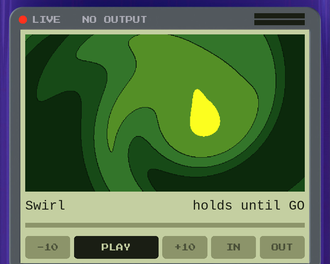
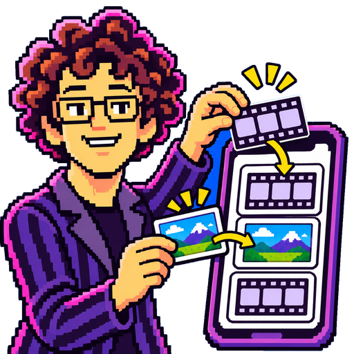
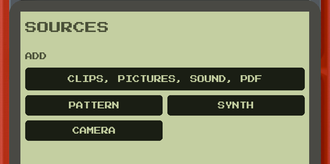
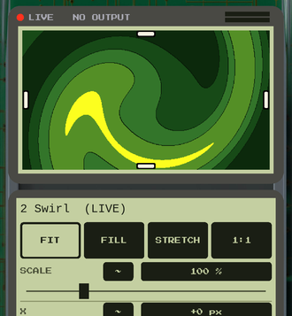
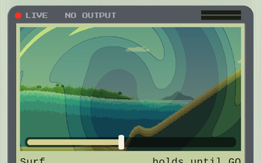
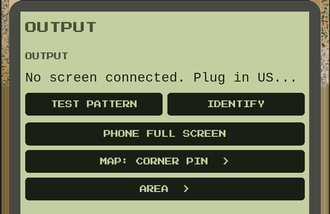
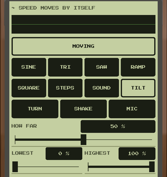
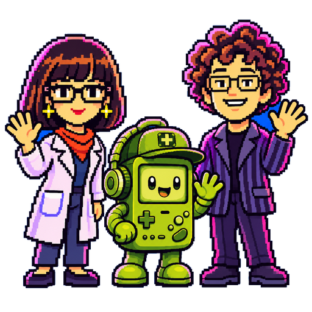
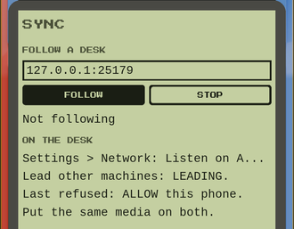

COVER
Print it on one side of one sheet, at 100%. Fold it in half three ways, cut the middle of the long fold, and fold it into an eight-page book that fits in a pocket.
NO LAPTOP.
NO RENTAL.
NO PERMISSION.
A whole video show, run from your phone. Android 10+.



SOURCES on Pocket">MENU > SOURCES, then grab:
Lost? MENU > SHOW > OPEN > TOUR OF TRICKS. SONG chains your lists into a set.
3
HOLD a cue. Its sheet opens:

The pad's RIGHT is a T-bar.

OUTPUT on Pocket">Jam a USB-C > HDMI dongle in. Pocket throws the show at the TV.
Get a dongle that CHARGES too (a USB-C power port, "PD pass-through"). Video eats battery. Power in = the show goes on.
Not every phone does video over USB-C. Test yours before the gig.
6
Tap ~ by any number and it moves by itself. Or YOU move it:
Surf on air? HOLD the picture and chuck stuff in the sea.
MENU > OUTPUT: test card, MAP a wall, AREA crop + mirror.
7

SYNC on Pocket">MENU > SYNC follows a Deckboy desk on your network. The desk can use your phone as an OUTPUT, or run it as a PLAYLIST.
Companion + scripts: port 5510.
GPL-3.0 // github.com/Utopian-Academy/Deckboy
Print it on one side of one sheet, at 100%. Fold it in half three ways, cut the middle of the long fold, and fold it into an eight-page book that fits in a pocket.